리눅스마스터-2급 (2016-09-10 기출문제)
1과목: 리눅스 운영 및 관리
1. 다음 ls –l 명령의 결과에 대한 설명으로 알맞은 것은?
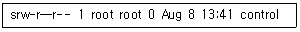
- 심볼릭 링크 파일을 의미한다.
- 블록 구조의 특수 파일을 의미한다.
- 소켓 파일을 의미한다.
- 입출력에 사용되는 특수 파일을 의미한다.
(정답률: 64%)

2. /root 디렉터리에 존재하는 test.txt 파일에 대해 모든 사용자가 읽기만 가능하도록 설정하기 위한 명령으로 알맞은 것은?
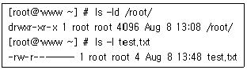
- chmod 111 /root/test.txt
- chmod 444 /root/test.txt
- chmod 555 /root/test.txt
- chmod 666 /root/test.txt
(정답률: 85%)
3. 다음 ( 괄호 ) 안에 들어갈 내용으로 알맞은 것은?
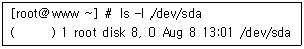
- brw-rw----
- crw-rw----
- drw-rw----
- lrw-rw----
(정답률: 47%)
4. 사용자 user1, 그룹 grep1 소유인 디렉터리 /home/user1을 포함한 하위 디렉터리 및 파일의 소유자를 모두 user2로 변경하려고 할 때 명령으로 알맞은 것은?
- chown -R user2 /home/user1
- chown -H user2 /home/user1
- chmod -R user2 /home/user1
- chmod -H user2 /home/user1
(정답률: 83%)
5. 다음 중 리눅스시스템에서 일반적으로 분류하는 3가지 종류에 해당하는 파일로 틀린 것은?
- 일반 파일
- 디렉터리 파일
- 백업 파일
- 특수 파일
(정답률: 69%)
6. / 이하에 있는 각 디렉터리별로 크기를 합쳐서 사람이 읽기 좋은 단위(KB, MB, GB 등)로 출력하기 위한 명령으로 알맞은 것은?
- du –s /*
- df –s /*
- du –sh /*
- df –sh /*
(정답률: 73%)
7. 리눅스 파일 시스템에서 특별한 종류의 디스크 블록으로 파일이름, 소유주, 권한, 시간, 디스크에서의 위치 등에 대한 정보를 담고 있는 것으로 알맞은 것은?
- partition table
- super block
- inode
- data block
(정답률: 69%)
8. 다음에서 설명하는 파일 시스템의 종류로 알맞은 것은?
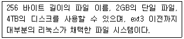
- msdos
- ext
- ext2
- nfs
(정답률: 87%)
9. 다음 중 fsck 명령 옵션에 대한 설명으로 틀린 것은?
- -A 옵션을 사용하면 /etc/fstab의 모든 파일 시스템에 대해 기능을 수행한다.
- -a 옵션을 사용하면 오류 발견 시 자동으로 복구를 시도한다.
- -s 옵션을 사용하면 파일 시스템 점검 전에 모든 inode를 출력한다.
- -r 옵션을 사용하면 복구 시도 전에 확인을 요청한다.
(정답률: 47%)
10. 다음 중 df 명령을 사용시 파일시스템의 종류를 확인할 때 입력하는 옵션으로 알맞은 것은?
- -T
- -t
- -h
- -a
(정답률: 51%)
11. 다음 설명으로 알맞은 것은?
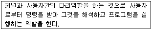
- 메타캐릭터(Metacharacter)
- 히스토리(History)
- 셸(Shell)
- 환경변수(Environment Variable)
(정답률: 88%)
12. 다음 ( 괄호 ) 안에 들어갈 내용으로 알맞은 것은?
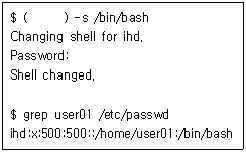
- chsh
- usermod
- groupmod
- shell
(정답률: 78%)
13. 다음 중 현재 작업 중인 셸을 확인 할 때 사용하는 명령어로 알맞은 것은?
- useradd
- ps
- groupadd
- chkconfig
(정답률: 79%)
14. 다음 설명으로 알맞은 것은?
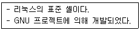
- bash
- tcsh
- zsh
- ksh
(정답률: 88%)
15. 다음 중 현재 셸에 선언된 모든 환경 변수를 확인하는 명령어로 알맞은 것은?
- test
- env
- ksh
- while
(정답률: 85%)
16. 다음 ( 괄호 ) 안에 들어갈 셸프롬프트 형식으로 알맞은 것은?
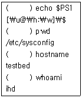
- [testbed@sysconfig:ihd]$
- [testbed@/etc/sysconfig:ihd]$
- [ihd@testbed:sysconfig]$
- [ihd@testbed:/etc/sysconfig]$
(정답률: 67%)
17. 다음 중 히스토리에 대한 기능 설명으로 틀린 것은?
- history : 히스토리에 저장된 명령어 목록을 출력
- history 10 : 최근에 입력한 마지막 10개의 명령어 목록을 출력
- !! : 히스토리 명령 목록에서 4만큼 거슬러 올라가서 해당 명령을 실행
- !a : 히스토리 목록 중 a로 시작하는 명령을 찾아서 실행
(정답률: 86%)
18. 다음 중 아래 조건을 만족하는 PATH 변수 설정으로 알맞은 것은?
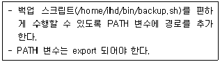
- export PATH=PATH:/home/ihd/bin/backup.sh
- export PATH=$PATH:/home/ihd/bin/backup.sh
- export PATH=PATH:/home/ihd/bin
- export PATH=$PATH:/home/ihd/bin
(정답률: 42%)
19. 다음 중 프로세스에 관련된 설명으로 알맞은 것은?
- 최초의 프로세스인 init은 PID 번호가 1이다.
- 리눅스 부팅 시에 발생하는 프로세스는 exec 방식이다.
- 하나의 프로세스가 다른 프로세스를 실행하기 위한 방법에는 inetd와 standalone 방식이 있다.
- inted 방식으로 관리되는 서비스들은 항상 메모리에 상주한다.
(정답률: 72%)
20. 다음에서 설명하는 내용으로 알맞은 것은?
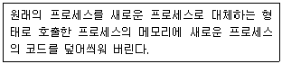
- inetd
- exec
- fork
- foreground
(정답률: 76%)
21. 다음 그림에 해당하는 내용으로 알맞은 것은?
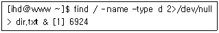
- foreground process
- background process
- inetd process
- standalone process
(정답률: 64%)
22. 다음 그림에 해당하는 명령으로 알맞은 것은?
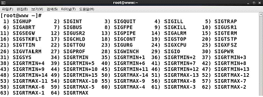
- kill -s
- kill -l
- killall -s
- killall -l
(정답률: 71%)
23. 다음 중 [Ctrl]+[z]를 입력했을 때 보내지는 시그널 번호로 알맞은 것은?
- 2
- 3
- 19
- 20
(정답률: 55%)
24. 다음 중 사용 중인 배시셸의 NI값을 확인할 때 사용하는 ps 옵션으로 알맞은 것은?
- -N
- -n
- -L
- -l
(정답률: 47%)
25. 다음 그림에 해당하는 명령으로 알맞은 것은?
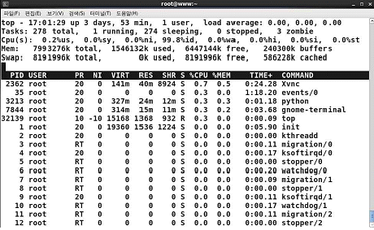
- ps
- pstree
- jobs
- top
(정답률: 67%)
26. 다음 중 프로세스 우선순위 변경에 사용되는 NI값의 범위로 알맞은 것은?
- -20 ∼ 19
- -20 ∼ 20
- -19 ∼ 19
- -19 ∼ 20
(정답률: 74%)
27. 다음 그림과 같은 상황에서 renice 명령을 실행 시에 적용되는 bash 셸의 NI값으로 알맞은 것은?
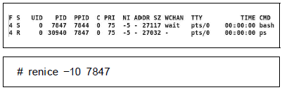
- -15
- -10
- 5
- 10
(정답률: 55%)
28. 다음 중 root 사용자가 ihd 사용자의 cron 작업을 변경하려고 할 때 명령으로 알맞은 것은?
- crontab -e ihd
- crontab -u ihd
- crontab -e -u ihd
- crontab -u -e ihd
(정답률: 60%)
29. 다음 중 리눅스에서 사용되는 편집기의 종류로 틀린 것은?
- emacs
- pico
- gedit
- tftp
(정답률: 79%)
30. 다음 같은 특성을 갖는 편집기로 알맞은 것은?
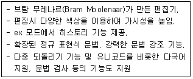
- emacs
- vi
- gedit
- vim
(정답률: 77%)
31. 다음 설명에 해당하는 편집기로 알맞은 것은?
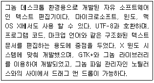
- vi
- gedit
- vim
- pico
(정답률: 71%)
32. 다음 중 vi 편집기에서 나머지 셋과 성격이 틀린 명령은?
- i
- a
- o
- j
(정답률: 81%)
33. 다음 [문서내용]을 vi 편집기로 편집할 때 [편집조건]에 알맞은 명령은?
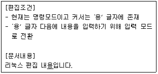
- I
- A
- a
- i
(정답률: 55%)
34. 다음은 $HOME/.vimrc 파일의 설정 내용이다. 다음 중 설정에 대한 설명으로 틀린 것은?
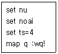
- 행의 앞에 행번호를 표시 기능이 켜져 있다.
- 탭의 크기를 4로 설정한다.
- 자동들여쓰기 기능이 켜져 있다.
- 매크로가 선언되어 있고 기능이 켜져 있다.
(정답률: 66%)
35. 다음 중 etc.tgz 파일에 httpd.conf 파일이 포함 되었는지 확인하는 명령으로 알맞은 것은?
- tar -xvf ./etc.tgz | grep "httpd\.conf"
- tar -dvf ./etc.tgz | grep "httpd\.conf"
- tar -tvf ./etc.tgz | grep "httpd\.conf"
- tar -rvf ./etc.tgz | grep "httpd\.conf"
(정답률: 67%)
36. 다음 tar 옵션 중 compress 형식으로 압축하거나 해제 할 때 사용하는 것으로 알맞은 것은?
- -j
- -z
- -J
- -Z
(정답률: 51%)
37. 다음 중 gzip 명령어의 옵션에 대한 설명으로 알맞은 것은?
- -l : 디렉터리에 포함된 모든 파일을 압축한다.
- -d : 강제로 압축 한다.
- -v : 압축 혹은 해제 시 정보를 출력한다.
- -r : 압축파일을 테스트한다.
(정답률: 70%)
38. 다음 중 tar 명령의 옵션에 대한 설명으로 틀린 것은?
- -p : 모든 퍼미션 정보를 유지한다.
- -f : 처리 과정을 자세히 보여준다.
- -c : 새 저장 파일을 만든다.
- -m : 파일의 변경 시간정보를 유지하지 않는다.
(정답률: 50%)
39. 다음 중 messages.xz 파일의 압축을 해제하기 위한 명령으로 알맞은 것은?
- xz -dv messages.xz
- xz -tv messages.xz
- xz -zv messages.xz
- xz -Vv messages.xz
(정답률: 41%)
40. 다음 중 rpm 패키지가 임의로 변경되었는지 파일크기, 심볼릭 링크, 장치파일 변경 등을 검사할 때 사용하는 옵션으로 알맞은 것은?
- -D
- -E
- -V
- -K
(정답률: 67%)
41. 다음 중 /sbin/ifconfig 파일을 포함하는 rpm 패키지를 알아내려고 할 때 사용하는 명령으로 알맞은 것은?
- rpm -qF /sbin/ifconfig
- rpm -qf /sbin/ifconfig
- rpm -qi /sbin/ifconfig
- rpm -qp /sbin/ifconfig
(정답률: 47%)
42. 다음 rpm 옵션 중에서 설치된 패키지의 문서파일 경로를 출력하는 것으로 알맞은 것은?
- -qc
- -qa
- -qf
- -qd
(정답률: 38%)
43. 다음 중 CUPS 관련 파일에 대한 설명으로 틀린 것은?
- /etc/cups/cupsd.conf : 프린터 데몬의환경설정 파일
- /etc/printcap : 프린터 큐관련 환경 설정 파일
- /etc/cups/classess.conf : 프린터 데몬의 클래스(class) 설정 파일
- cupsd : 프린터 데몬
(정답률: 62%)
44. 다음 중 LPRng의 설명으로 틀린 것은?
- 애플이 개발한 오픈 소스 프린팅 시스템이다.
- BSD계열 유닉스에서 사용하기 위해 개발되었다.
- 설정 정보는 /etc/printcap에 저장된다.
- 프린터 스풀링과 네트워크 프린터 서버를 지원한다.
(정답률: 69%)
45. 다음 설명으로 알맞은 것은?
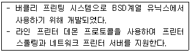
- LPRng
- CUPS
- ALSA
- OSS
(정답률: 76%)
46. cancel 명령으로 한 개의 프린터 작업을 취소하려고 한다. 다음 중 필수로 선행되어야 할 작업으로 알맞은 것은?
- lpstat 명령을 이용해 요청 ID를 확인한다.
- lpr 명령을이용해출력한뒤지정한파일을삭제한다.
- lpc 명령을 이용해 지정한 프린터를 사용할 수 없게 한다.
- lp 명령을 이용해 다른 프린터를 지정한다.
(정답률: 65%)
47. 다음 중 커서(ncurses) 라이브러리 기반의 오디오 프로그램으로 알맞은 것은?
- alsamixer
- cdparanoia
- scanadf
- xcam
(정답률: 72%)
48. 다음 중 BSD 계열 프린터 명령으로 알맞은 것은?
- lp
- lpstat
- lpc
- cancel
(정답률: 60%)
2과목: 리눅스 활용
49. 다음 중 X 윈도에 대한 설명으로 틀린 것은?
- Bob Scheifler가1986년오픈소스프로젝트로만들었다.
- 그래픽 환경의 인터페이스를 사용자가 원하는 모양으로 만들 수 있다.
- X Protocol을 사용한다.
- 특정 디스플레이 장치에 의존적이다.
(정답률: 72%)
50. 다음 중 X 윈도 구성요소에서 사용자 로그인 및 세션관리를 수행하는 것으로 알맞은 것은?
- Display Manager
- Window Manager
- GNOME
- User Interface
(정답률: 60%)
51. 다음 KDE 프로그램들 중에서 텍스트 편집기로 알맞은 것은?
- dolphin
- Rhythmbox
- KRuler
- kwrite
(정답률: 73%)
52. 다음 중 리눅스를 시작할 때 X 윈도가 실행되도록 설정하려고 한다. 관련 설정 파일에 들어갈 내용으로 알맞은 것은?
- id:3:initdefault:
- id:5:initdefault:
- initdefault:3:id:
- initdefault:5:id:
(정답률: 64%)
53. 다음 중 X 윈도 환경에서 사용 가능한 멀티미디어 프로그램이 아닌 것은?
- Totem
- KMid
- Krfb
- Dragon Player
(정답률: 41%)
54. 다음 중 X 윈도에서 사용 가능한 응용 프로그램에 대한 설명으로 알맞은 것은?
- KSnapshot : 비디오 재생 프로그램
- gThumb : 파일 관리 프로그램
- eog : 이미지 뷰어 프로그램
- LibreOffice : 동영상 편집기
(정답률: 73%)
55. 다음 중 X 윈도에서 사용되는 클라이언트 라이브러리로 윈도우창 생성, 이벤트 처리, 창 조회, 키보드 처리와 같은 라이브러리를 제공하는 것으로 알맞은 것은?
- GTK
- glibc
- Qt
- xlib
(정답률: 65%)
56. 다음 중 LibreOffice에서 프리젠테이션 프로그램으로 알맞은 것은?
- LibreOffice Impress
- LibreOffice Draw
- LibreOffice Calc
- LibreOffice Writer
(정답률: 78%)
57. 다음 중 OSI 7 계층과 해당 계층과 관련된 내용으로 알맞은 것은?
- 어플리케이션 계층 : TCP/IP, HTTP, Telnet
- 트랜스포트 계층 : TCP, UDP, ICMP, IGMP
- 네트워크 계층 : TCP/IP, MAC
- 데이터링크 계층 : CSMA/CD, CRC
(정답률: 48%)
58. 다음 설명에 해당하는 통신장비로 알맞은 것은?
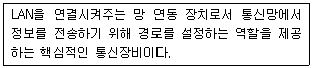
- 라우터
- 리피터
- 브리지
- 스위칭 허브
(정답률: 77%)
59. 다음 중 IP 주소(Internet Protocol Address)의 설명으로 틀린 것은?
- IP 주소는 특수한 번호로 각 컴퓨터마다 고유한 값으로 제공한다.
- IPv4는 32비트의 이진 숫자로 구성된다.
- IP주소는 0.0.0.0∼255.255.255.255 사이의 값을 갖는다.
- IP 주소는 첫 4비트 영역의 값에 따라 A, B, C, D 총 4개의 클래스로 나뉜다.
(정답률: 64%)
60. 다음 설명으로 알맞은 것은?
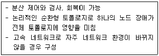
- 망 토폴로지
- 링 토폴로지
- 버스 토폴로지
- 스타 토폴로지
(정답률: 63%)
61. 다음 중 각 프로토콜에 대한 설명으로 알맞은 것은?
- SNMP : TCP/IP 프로토콜을 사용하는 인터넷에서 장치들을 관리하기 위한 프로토콜
- TFTP : 단순한 파일 복사를 수행하는 FTP의 기능을 강화한 프로토콜
- ARP : 물리주소를 IP주소로 변환시키는 프로토콜
- ICMP : IP 프로토콜의 기존 오류 보고와 오류 수정 기능을 향상시키기 위한 프로토콜
(정답률: 32%)
62. IP 주소를 기억하기 쉬운 문자(이름)로 변환시켜 주는 프로토콜로 알맞은 것은?
- ARP
- DNS
- HTTP
- NFS
(정답률: 76%)
63. 다음 중 라우터의 장점에 대한 설명으로 틀린 것은?
- 대규모 통신망을 쉽게 구성할 수 있다.
- 다양한 경로를 따라 통신량을 분산할 수 있다.
- 전체 네트워크의 성능을 개선할 수 있다.
- 모든 프로토콜을 지원하고 있다.
(정답률: 70%)
64. 다음 ( 괄호 ) 안에 들어갈 내용으로 알맞은 것은?
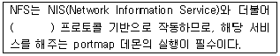
- IRC
- CIFS
- RPC
- imap
(정답률: 60%)
65. 다음 중 메일서비스를 사용하기 위해서 적용되는 인터넷 전송규약과 서비스 프로그램 연결조합으로 틀린 것은?
- IMAP : imapd
- ICMP : inetd
- SMTP : sendmail
- POP : qpopper
(정답률: 54%)
66. 다음 중 WWW에 대한 설명으로 틀린 것은?
- World Wide Web의 약어로 인터넷상에서 멀티미디어와 하이퍼텍스트를 통합한 것이다.
- WWW 서비스를 위해서는 특정 클라이언트 프로그램인 브라우저가 필요하다.
- 인터넷에 연결된 전 세계 컴퓨터의 모든 문서들을 연결하여 언제 어디서든 정보 검색이 가능하게 해 주는 서비스이다.
- 문자 환경 서비스로서 전문가들이 사용하고, 다양한 컴퓨팅 환경에서 사용할 수 있다.
(정답률: 73%)
67. 다음 중 일반사용자가 메일을 받을 때 사용하는 프로토콜로 알맞은 것은?
- FTP
- POP3
- SMTP
- SNMP
(정답률: 63%)
68. 다음 중 전송규약과 해당하는 서버 프로그램의 연결로 틀린 것은?
- FTP : proftpd
- HTTP : mozilla
- SMTP : qmail
- DNS : bind
(정답률: 55%)
69. 다음 중월드와이드 웹(WWW)의 특징으로틀린것은?
- 연결된 문서를 언제 어디서든 검색 가능하다.
- 그래픽 유저 인터페이스 사용이 가능하다.
- 다양한 컴퓨터 환경하에서도 사용이 가능하다.
- FTP, E-Mail, Telnet 사용이 가능하다.
(정답률: 63%)
70. 다음 중 Kernel IP routing table을 확인할 수 있는 명령으로 알맞은 것은?
- netstat
- traceroute
- hostname
- ifconfig
(정답률: 55%)
71. 다음의 네트워크 설정파일과 명령어를 통해서 공통적으로 변경되는 항목으로 알맞은 것은?
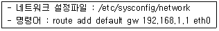
- Network Address
- IP Address
- Gateway Address
- DNS Address
(정답률: 69%)
72. 다음 중 리눅스가 지원하는 네트워크 인터페이스에 대한 설명으로 틀린 것은?
- lo : 루프 백 인터페이스로서 자기 자신을 가리킨다.
- dl : 다이렉트 인터페이스로서 이더넷에서 사용된다.
- plip : 패러럴 라인 인터페이스이다.
- sl : SLIP 인터페이스를 말한다.
(정답률: 46%)
73. 다음 중 ifconfig 명령어를 통해 확인할 수 있는 정보로 틀린 것은?
- MAC
- MTU
- BroadCast
- ARP
(정답률: 53%)
74. 다음 중 인터넷 서비스를 사용하기 위해 사용하는 명령과 가장 거리가 먼 것은?
- ifconfig
- route
- traceroute
- netconfig
(정답률: 56%)
75. 다음 중 netstat 명령으로 라우터 테이블 정보를 확인할 때 사용하는 옵션으로 알맞은 것은?
- -a
- -l
- -r
- -s
(정답률: 48%)
76. 다음 중 DNS서버의 설정 정보를 확인할 때 사용하는 명령으로 알맞은 것은?
- arp
- dig
- dns
- ping
(정답률: 49%)
77. 다음에서 설명하는 내용으로 알맞은 것은?
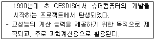
- 고가용성 클러스터
- 부하분산 클러스터
- 베어울프 클러스터
- Primary-Secondary 클러스터
(정답률: 64%)
78. 다음 중 임베디드 리눅스의 장점으로 틀린 것은?
- 커널과 루트 파일 시스템 등에 상대적으로 적은 메모리를 차지한다.
- 별도의 로열티나 라이센스 비용이 없다.
- 커널이 안정적이다.
- 소스가 공개되어 있어서 변경과 재배포가 용이하다.
(정답률: 59%)
79. 다음 중 서버 가상화의 장점으로 틀린 것은?
- 응급 재해 시 서비스 중단 없는 빠른 서비스 복구
- 시스템장애 발생 시 문제 해결이 간단하고 신속한 대처 가능
- 서버 트래픽 증가에 따른 유연한 대처
- 데이터 및 서비스 가용성 증가
(정답률: 46%)
80. 다음에서 설명하는 운영체제의 종류로 알맞은 것은?
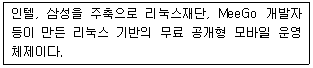
- 모블린
- 마에모
- 타이젠
- 안드로이드
(정답률: 62%)